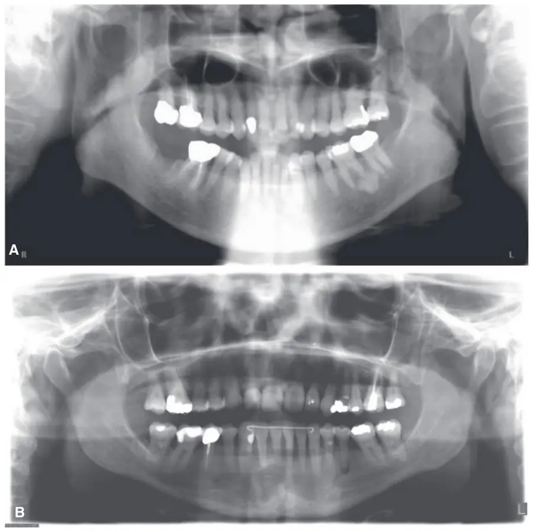

نسخه استخراجشده؛ ترجمه یا تأیید علمی انجام نشده است. وضعیت: captured
قدم 1 · theory
جدول جمعبندی پانورامیک
بلوک ۱ — اصل و فوکال تراف
پانورامیک = پانتوموگرافی = تصویربرداری مقطعی با یک چرخش منبع و گیرنده.
دو کولیماتور: کنار منبع (باریکهی عمودی) و میان بیمار و گیرنده (کاهش پراکندگی).
فوکال تراف = ناحیهی منحنی سهبعدی وضوح، مرکز واضحترین، شکلش با برند و پروتکل فرق میکند، تعیینشده با مسیر و سرعت، همراستایی پرتو، و پهنای کولیماتور، محلش با استفادهی زیاد جابهجا میشود ← کالیبراسیون دوباره.
کاهش کمان چرخشی ← فوکال تراف کوچکتر (کودکان) و دوز کمتر.
مزیت: پوشش گسترده، دوز پایین، سهولت، تریسموس، آموزش بیمار. عیب: تفکیک کم، بزرگنمایی نابرابر، سه نوع تصویر روی هم، نیاز به وضعیتدهی دقیق، اختلاف شدید فکی.
بلوک ۲ — سه نوع تصویر
واقعی (آبی): میان مرکز چرخش و گیرنده. درون فوکال تراف = تیز؛ بیرون = محو.
دوتایی (سبز): خلف مرکز چرخش، دو بار قطعشده. ساکنان: هیوئید، اپیگلوت، ستون گردنی.
شبح (نارنجی): میان منبع و مرکز چرخش. سه نشانه: سمت مقابل، بالاتر (شیب رو به بالای پرتو)، محو و بسیار بزرگ.
کام سخت = دو خط: پایینی تیز (سمت گیرنده)، بالایی منتشر (شبح سمت تیوب).
گوشواره، گردنبند و گیرهی مو شبح میسازند و میتوانند پاتولوژی را بپوشانند یا تقلید کنند.
بلوک ۳ — اعوجاج
افقی با موقعیت در فوکال تراف تعیین میشود: خلفی/لینگوال ← پرتو کندتر ← دندان «چاق»، قدامی/باکال ← پرتو سریعتر ← دندان «لاغر». تنها ۵ میلیمتر کافی است.
بُعد عمودی اندکی تغییر میکند؛ بزرگنمایی عمودی با فاصلهی منبع تا جسم تعیین میشود.
چرخش سر: سمتی که سر به آن چرخیده ← خلفیهای بزرگ و همپوشانی شدید پرمولر؛ سمت مقابل ← کوچک. نباید با آسیمتری واقعی صورت اشتباه شود.
عیبیابی: پهنای مزیودیستالی مولر اول مندیبل را دوطرفه مقایسه کن — کوچکتر = نزدیک گیرنده، بزرگتر = نزدیک مرکز چرخش.
اعوجاج افقی در قدام شدیدتر از خلف است.
شیب کائودوکرانیال: کانال لینگوالی نزدیکتر به آپکس و باکالی دورتر پروجکت میشود ← فاصلهی آپکس تا کانال غیرقابل اعتماد.
به اندازهگیری خطی و زاویهای روی پانورامیک تکیه نکن؛ ضریب بزرگنمایی از پیش تعیینشده وجود ندارد.
بلوک ۴ — خطاهای وضعیتدهی
بیش از حد خلفی ← دندانهای قدامی چاق.
بیش از حد قدامی ← دندانهای قدامی لاغر.
ساژیتال خارج از خط وسط ← دو سمت نابرابر، همپوشانی پرمولر، گاهی غیرتشخیصی. خطای شایع.
چانه بالا ← صفحهی اکلوزال صاف یا وارونه + کام سخت روی ریشههای ماگزیلا.
چانه پایین ← خط لبخند اغراقشده + همپوشانی شدید + سمفیز بریده + کندیلها بیرون از لبه.
گردن خمیده ← اوپسیتهی بزرگ خط وسط از مهرههای گردنی ← گاهی تکرار لازم. اصلاح: پشت راست، گردن کشیده، نیروی ملایم روی ماستوئید.
زبان پایین ← فضای هوایی زیر کام سخت ← آپکسهای ماگزیلا مختل. اصلاح: ببلع و زبان را به کام بچسبان.
راهنمای چانه: خط تراگوس تا کانتوس بیرونی موازی کف؛ صفحهی اکلوزال در قدام اندکی پایینتر.
بلوک ۵ — تفسیر
نمایش: انگار به بیمار نگاه میکنی، خلف = نمای ساژیتال، قدام = نمای کرونال.
ریج ابلیک خارجی باکال و مایلوهیوئید لینگوال — هر دو تیز، ولی میلیمترها جدا.
«ماگزیلا» نامیدن میدفیس نادرست است.
فیشور پتریگوماگزیلاری = قطرهی اشک وارونه؛ از دست رفتن مرز قدامی ← موکوسل یا کارسینومای سینوس.
مرز داخلی سینوس ماگزیلاری روی پانورامیک دیده نمیشود؛ خلف سینوس اوپکتر (زیگوما)؛ آسیمتری واریانت شایع.
کورتکس مرز تحتانی ≥ ۳ میلیمتر در بزرگسال، پله = شکستگی، تغییر تیز صفحهی اکلوزال = شکستگی در ناحیهی دنداندار، شیب بدون پله = خلف آن.
کندیل قدامی-تحتانیتر از حالت بسته، حلقهی قدامی کانال در ایمپلنت کانین، گشادشدگی نقطهی ورود واریانت طبیعی.
فوسای سابمندیبولار رادیولوسنت، میان ریج مایلوهیوئید و مرز تحتانی.
خط وسط اوپکتر: برجستگی منتال + ترابکول بیشتر + ستون گردنی.
غضروف تیروئید ↔ کلسیفیکاسیون عروقی: اشتباه رایج.
برچسب اجباری بدون پوشاندن آناتومی؛ هیچ بخشی از تصویر بریده نشود.
سؤالهای این مرور سختترند و بسیاری یک نشانهی تصویری میدهند و میپرسند کدام خطا، کدام نوع تصویر، یا کدام واریانت.

وضعیتدهی نادرست گردن و نشانهاش روی تصویر (White & Pharoah. Oral Radiology, 9th ed. — Fig. 8.15)
قدم 2 · question
در دستگاه پانورامیک، دو کولیماتور چه نقشی دارند؟
۰۱
کولیماتور در پانورامیک به کار نمیرود و شکل باریکه تنها با شکاف سپر سربی محفظهی تیوب تعیین میشود و به قطعهی جداگانهای نیاز نیست
۰۲
هر دو کنار منبعاند و با هم شکل مستطیلی میدان را میسازند؛ و هیچ کولیماتوری پس از بیمار در مسیر پرتو قرار نمیگیرد چون این کار دوز را افزایش میدهد
۰۳
کولیماتور اول جهت پرتو را در طول چرخه تغییر میدهد و کولیماتور دوم سرعت حرکت گیرنده را با سرعت چرخش منبع هماهنگ نگه میدارد
۰۴
کولیماتور کنار منبع پرتو را به باریکهی عمودی باریک محدود میکند؛ و کولیماتور میان اجسام و گیرنده پرتو پراکندهی رسیده به گیرنده را میکاهد
قدم 3 · question
وجه مشترک همهی اندیکاسیونهای پانورامیک چیست؟
۰۱
نیاز به دیدن گسترهی وسیعی از فکها و ساختارهای اطراف در یک تصویر، مثلاً در شکستگی فک یا ضایعهی بزرگ استخوانی
۰۲
نیاز به بالاترین تفکیک فضایی ممکن برای دیدن جزئیات ظریف در ناحیهای محدود از قوس دندانی و ساختارهای مجاور آن
۰۳
نیاز به اندازهگیری دقیق ابعاد خطی و زاویهای ساختارهای استخوانی در برنامهریزی درمانهای جراحی و پروتزی
۰۴
نیاز به تفکیک روابط باکولینگوالی میان ساختارها که در تصویربرداری تخت معمول قابل ارزیابی نیستند و به بُعد سوم نیاز دارند
قدم 4 · question
برای سازگار کردن فوکال تراف با فک کودکان چه کاری انجام میشود و چه سودی دارد؟
۰۱
افزایش کمان چرخشی، که فوکال تراف را پهنتر و خطاپذیرتر میسازد؛ و سودش کاهش نیاز به تکرار کلیشه در کودکان بیقرار است
۰۲
کاهش کمان چرخشی حرکت منبع-گیرنده، که اندازهی فوکال تراف را کوچکتر میکند؛ و سودش کاهش پرتوگیری بیمار است
۰۳
کاهش کیلوولتاژ دستگاه، که ضخامت لایهی وضوح را کم میکند؛ و سودش کاهش دوز بهدلیل انرژی پایینتر پرتو است
۰۴
استفاده از گیرندهی کوچکتر، که ناحیهی پوشش را محدود میکند؛ و سودش کوتاهتر شدن زمان اکسپوز و کاهش آرتیفکت حرکتی است
قدم 5 · question
هنگام تصویربرداری راموس چپ، راموس چپ و راست هرکدام چه نوع تصویری میسازند؟
۰۱
راموس چپ که میان مرکز چرخش و گیرنده است تصویر واقعی و تیز میسازد؛ و راموس راست که میان منبع و مرکز چرخش است تصویر شبح روی سمت چپ میاندازد
۰۲
راموس چپ تصویر شبح و راموس راست تصویر واقعی میسازد؛ چون سمت نزدیکتر به گیرنده همیشه شبح و سمت دورتر همیشه تصویر واقعی تولید میکند
۰۳
هر دو راموس تصویر واقعی و تیز میسازند؛ چون هر دو در طول چرخهی اکسپوز درون فوکال تراف قرار میگیرند و هیچکدام شبح تولید نمیکند
۰۴
هر دو راموس تصویر دوتایی میسازند؛ چون هر دو خلف مرکز چرخش قرار دارند و در طول چرخه دو بار توسط پرتو قطع میشوند و در هر دو سمت ثبت میگردند
قدم 6 · question
چرا استخوان هیوئید میتواند همزمان چند نوع تصویر بسازد؟
۰۱
چون نواحی تصویر دوتایی و شبح با هم همپوشانی دارند، و هیوئید در همین ناحیهی همپوشان قرار میگیرد
۰۲
چون هیوئید در طول چرخهی اکسپوز بهدلیل حرکات بلع بیمار جابهجا میشود و در هر موقعیت نوع متفاوتی از تصویر بر جای میگذارد
۰۳
چون دانسیتهی هیوئید در بخشهای مختلفش متفاوت است و هر بخش بسته به دانسیتهاش نوع دیگری از تصویر تولید میکند
۰۴
چون هیوئید تنها استخوانی است که به هیچ استخوان دیگری مفصل نمیشود، و این استقلال آناتومیک رفتار تصویری ویژهای به آن میدهد
قدم 7 · question
سه نشانهی تصویر شبح کداماند و همه از چه ریشهای میآیند؟
۰۱
خط وسط، ارتفاع متغیر، و با دانسیتهی کمتر از تصویر واقعی؛ و همه از پراکندگی پرتو در بافت نرم اطراف جسم ناشی میشوند
۰۲
همان سمت، ارتفاع پایینتر، و تیز و کوچک؛ و همه از این میآیند که جسم نزدیک گیرنده و درون صفحهی فوکال قرار گرفته است
۰۳
هر دو سمت، همان ارتفاع، و با اندازهی واقعی؛ و همه از این میآیند که جسم دو بار توسط پرتو قطع شده و دو تصویر قرینه ساخته است، مانند هیوئید در ناحیهی خلفی
۰۴
سمت مقابل، ارتفاع بالاتر، و محو و بسیار بزرگ؛ و همه از این میآیند که جسم نزدیک منبع و بیرون از صفحهی فوکال است و پرتو شیب رو به بالا دارد
قدم 8 · question
اعوجاج افقی در کدام ناحیه شدیدتر است و چه هشداری در پی دارد؟
۰۱
در ناحیهی خلفی؛ و هشدارش این است که ارزیابی مولرهای سوم روی پانورامیک بیاعتبار است و همیشه باید با کلیشهی داخلدهانی جایگزین شود، چون مولرها دورتر از مرکز چرخشاند
۰۲
در ناحیهی قدامی؛ و هشدارش این است که ضایعات در تصاویر پیاپی میتوانند نسبتاً بزرگتر یا کوچکتر به نظر برسند بیآنکه واقعاً تغییر کرده باشند
۰۳
در ناحیهی کندیل؛ و هشدارش این است که ارزیابی TMJ روی پانورامیک ممنوع است و تنها با MRI انجام میشود و هیچ ارزش غربالگری ندارد
۰۴
در هیچ ناحیهای شدیدتر نیست؛ و هشداری در پی ندارد چون اعوجاج یکنواخت با یک ضریب ثابت قابل تصحیح است و اندازهگیری را معتبر میکند
قدم 9 · question
روی پانورامیک، فاصلهی آپکس مولر سوم مندیبل تا کانال کم به نظر میرسد. برای تصمیم جراحی به این فاصله چقدر میتوان اتکا کرد؟
۰۱
کامل؛ چون بُعد عمودی روی پانورامیک با فاصلهی منبع تا جسم تعیین میشود و در دستگاههای امروزی این فاصله ثابت است، پس روابط عمودی دقیقاند، و خطای آنها کمتر از یک میلیمتر است
۰۲
کم؛ چون بسته به موقعیت باکولینگوالی کانال، فاصلهی آپکس تا کانال روی پانورامیک میتواند نادرست نمایش داده شود و ارزیابی مقطعی لازم میشود
۰۳
کامل، به شرط آنکه وضعیتدهی بیمار درست بوده باشد؛ خطای روابط عمودی تنها از بدجایگاهی بیمار ناشی میشود و در کلیشهی درست وجود ندارد
۰۴
کم، ولی تنها در ناحیهی قدامی؛ در ناحیهی مولر که کانال در آن پهنتر و واضحتر است روابط عمودی قابل اعتمادند و به بررسی بیشتر نیاز ندارند
قدم 10 · question
سادهترین راه سنجش درجهی اعوجاج افقی روی یک پانورامیک چیست و نتیجهاش را چگونه میخوانی؟
۰۱
مقایسهی دانسیتهی دو نیمهی تصویر با چشم؛ نیمهی تیرهتر نزدیک منبع و نیمهی روشنتر نزدیک گیرنده قرار داشته و همین جهت چرخش گفته میشود
۰۲
مقایسهی ارتفاع تاج انسیزورهای مرکزی در دو فک؛ اگر ارتفاعها برابر نباشند، بیمار در بُعد عمودی نادرست جای گرفته و کلیشه باید تکرار شود، حتی اگر فکها متقارن باشند
۰۳
مقایسهی پهنای مزیودیستالی مولرهای اول مندیبل در دو سمت؛ سمت کوچکتر بیش از حد نزدیک گیرنده و سمت بزرگتر بیش از حد نزدیک مرکز چرخش بوده است
۰۴
شمردن دندانهای دیدهشده در هر سمت؛ اگر شمار دو سمت برابر نباشد بیمار چرخیده و بخشی از قوس از فوکال تراف بیرون افتاده است
قدم 11 · question
خطای گردن خمیده به جلو چه نشانهای میسازد و چگونه اصلاح میشود؟
۰۱
همپوشانی شدید دندانهای خلفی در هر دو سمت؛ اصلاح با جلو آوردن بیمار در فوکال تراف تا لبههای برنده دقیقتر در شیار بایت استیک بنشینند
۰۲
فضای هوایی رادیولوسنت زیر کام سخت که دید آپکسهای ماگزیلا را مختل میکند؛ اصلاح با درخواست از بیمار برای بلع و چسباندن زبان به سقف دهان پیش از اکسپوز؛ که خطای گردن را هم خودبهخود برطرف میکند
۰۳
کوتاه شدن ارتفاع راموس در هر دو سمت؛ اصلاح با بالا بردن چانه تا زمانی که خط تراگوس تا کانتوس بیرونی چشم موازی کف قرار گیرد و کندیلها در کادر بیفتند؛ و در صورت نیاز تکرار کلیشه پس از استراحت بیمار
۰۴
آرتیفکت اوپک بزرگ در خط وسط از سوپرایمپوزیشن مهرههای گردنی که کل ناحیهی سمفیز را میپوشاند؛ اصلاح با نشستن راست، کشیدن گردن، و نیروی ملایم رو به بالا روی برجستگیهای ماستوئید
قدم 12 · question
کدام گزاره دربارهی جهت نمایش و صفحات پانورامیک درست است؟
۰۱
انگار به بیمار نگاه میکنی، با سمت راست بیمار در چپ بیننده؛ و در خلف نمای ساژیتال و در قدام نمای کرونال دیده میشود
۰۲
انگار پشت سر بیمار ایستادهای، با سمت راست بیمار در راست بیننده؛ و در خلف نمای کرونال و در قدام نمای ساژیتال دیده میشود
۰۳
جهت نمایش در هر مرکز متفاوت است؛ و در سراسر تصویر تنها نمای ساژیتال دیده میشود چون پرتو همیشه از کنار به فک میتابد
۰۴
جهت نمایش همان جهت CBCT است؛ و در سراسر تصویر نمای اکسیال دیده میشود چون پانورامیک برشی افقی از فکهاست که باز شده است
قدم 13 · question
کدام مورد جزو هفت جایگاه بررسی میدفیس روی پانورامیک نیست؟
۰۱
حفرهی بینی و شاخکها، سینوسهای ماگزیلاری، و دندانهای ماگزیلا و آلوئول نگهدارنده
۰۲
فیشور پتریگوماگزیلاری و مرز کورتیکال ماگزیلا شامل مرز خلفی و ریج آلوئولار
۰۳
کمپلکس زیگوماتیک شامل رینگهای تحتانی و جانبی اربیت و زائدهی زیگوماتیک ماگزیلا
۰۴
کانال مندیبولار و فورامن منتال، که هر دو بهخوبی در تنهی مندیبل دیده میشوند
قدم 14 · question
کدام مجموعهی قاعدههای مندیبل روی پانورامیک درست است؟
۰۱
کورتکس مرز تحتانی در بزرگسال ≥ ۳ سانتیمتر، هر تغییر در صفحهی اکلوزال = شکستگی کندیل، نازک شدن کورتکس همیشه موضعی و همیشه نشانهی کیست است و ارتباطی با بیماری سیستمیک ندارد، و خط وسط پانورامیک بهدلیل نازکی استخوان سمفیز رادیولوسنتتر از نواحی دیگر است
۰۲
کورتکس مرز تحتانی در بزرگسال ≥ ۳ میلیمتر و یکنواخت، پله در مرز تحتانی = شکستگی، تغییر تیز صفحهی اکلوزال = شکستگی در ناحیهی دنداندار، شیب بدون پله = شکستگی خلف آن، نازک شدن فراگیر ← استئوپروز یا هایپرپاراتیروئیدیسم
۰۳
کورتکس معیار عددی ندارد و تنها با مقایسهی دو سمت ارزیابی میشود، و شکستگی تنها با کشف خط رادیولوسنت مستقیم تشخیص داده میشود و نشانههای غیرمستقیم بیاعتبارند
۰۴
کورتکس مرز تحتانی در بزرگسال ≥ ۱ میلیمتر، پله در مرز تحتانی واریانت طبیعی است، و صفحهی اکلوزال هیچ اطلاعاتی دربارهی محل شکستگی نمیدهد